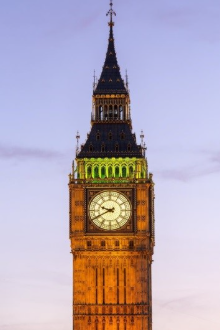
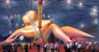
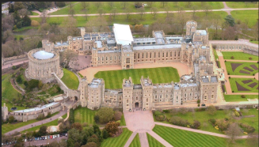
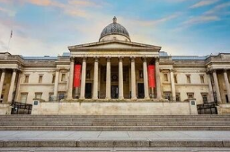
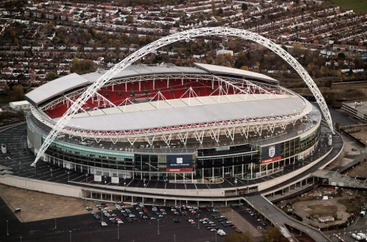
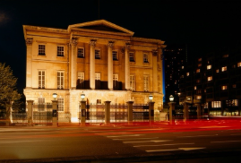
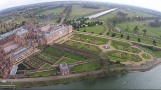
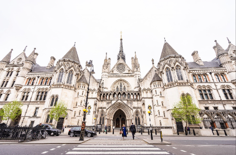

Big Ben
The clock tower of the Palace of Westminster — the most famous symbol of London. History, design and traditions.
Travel guide for school children

The clock tower of the Palace of Westminster — the most famous symbol of London. History, design and traditions.

The official London residence of the British monarch, a symbol of the British Crown and a major tourist attraction.

A historic Anglican cathedral in London, known for its distinctive dome and rich history.

A large retractable-roof structure in London, now known as The O2, used for concerts and events.

Windsor Castle is the residence of the monarchs of Foggy Albion.

National Gallery of London is a museum in London on Trafalgar Square.
herlock Holmes Museum is a London home museum of the consulting detective Sherlock Holmes.
herlock Holmes Museum is a London home museum of the consulting detective Sherlock Holmes.
Madame Tussauds Museum is a wax museum in the London district of Marylebone.

Wembley Arena is an indoor sports and concert venue in Wembley.

Kensington Palace is a small and deliberately modest palace in the western part of London.

Hyde Park is a royal park in the center of London.

The London Eye is a London Ferris wheel located in the Lambeth area.

Hampton Court is a country palace of the English kings in the vicinity of London.

The Royal Courthouse is an impressive complex of administrative buildings in the Neo-Gothic style.